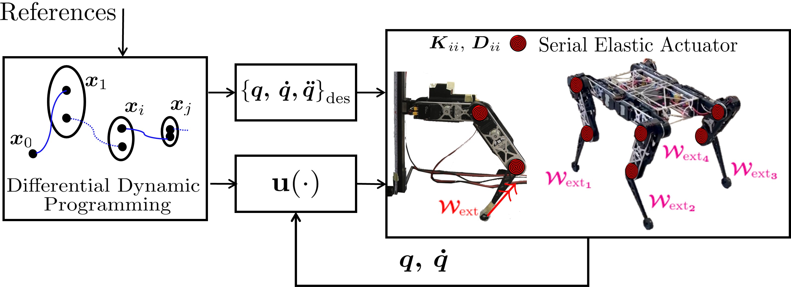

Optimal Control

To generate explosive and energy-efficient motions of robots, we implemented a Differential Dynamic Programming(DDP) routine.
DDP works in a model-based paradigm and computes local optimal policy composed a feedback and a feedforward term.
Thus, it is able to exploit the elasitity of the robot's body while ensuring high performances.
We build up from the Crocoddyl library with the following contributions:
- Integration of the Soft Dynamics modeling Serial Elastic and Variable Stiffness Actuators (SEA and VSA).
- Use of Analitical Derivatives.
- Validation on floating-based and fixed-basedrobots.
We publish the following paper Optimal Control for Soft Articualted Robot (T-RO)
In the following, we report videos of Otto (8 DoFs) robot controller via de DDP framework
Otto Jumping

Otto Walking